新疆，在我心中，一直是西北边陲一抹神秘的绿色，是从小就爱看武侠的我心中的一片圣地：皑皑白雪映照着青青牧场，天山雪莲在高山绝顶闪耀着神秘的光芒，而这片土地上孕育的人，七剑、白发魔女、飞红巾、玉娇龙，也是天然随性、敢爱敢恨，虽不像江南女子那样惹人爱怜，却不禁令人心生敬佩。
所以，当机票已经订好，新疆之旅真真切切的就要成行，我心中的期盼真是无法言喻。
7月7日：早上不到5点就起了，赶7点40的飞机。据说新疆和田劫机事件之后，机场的安检格外严格，很多人只能在安检的队伍里眼睁睁的看着飞机起飞，所以将出发时间提前了40分钟。曼曼居然刚叫了一声就起了，闭着眼睛坐在床上开始穿衣服。我惊讶极了，问她：“平时上学，7点怎么都叫不起来呢？”她还振振有词：“平时起床是去上学，今天起床是坐飞机出去玩。你也不想想，去上学是什么心情，出去玩又是什么心情，那能一样吗？”呵，说的还一套一套的。
路上接上袁臻一大家子，杀到机场。曼曼和嘟嘟两个小家伙都是第一次坐飞机，很新鲜，爱看飞机上的电视，爱吃飞机上的午餐。中午12点，抵达乌鲁木齐。
袁臻的亲戚到机场接我们，安排我们住在他们家，弄得我们十分不好意思，把人家挤得都没地方睡了。新疆人真是热情，吃了袁臻的婶婶炖的羊肉，还有手抓饭，那个香呀！路边水果摊卖的杏、蟠桃、哈密瓜，看着和北京的没啥区别，一入口那个甜呀！晚上和她婶婶到附近的广场，很多的人，汉族的、维族的，在跳一种新疆舞，好像叫曼提拉普，动作很简单，味道就在抖肩膀和翻手腕。有个老头跳的真好，肩膀动的，我只能想到用“风情万种”来形容了。
到新疆是需要倒时差的，这里的人一般10点才起，晚上12点睡就算早的了，晚上10点多天还是亮的。可是我们撑到11点多就支持不住了，在新疆这些天好像时差一直也没太倒过来，还是睡得早起得早。
7月8日：终于，杀向如雷贯耳的天山天池。
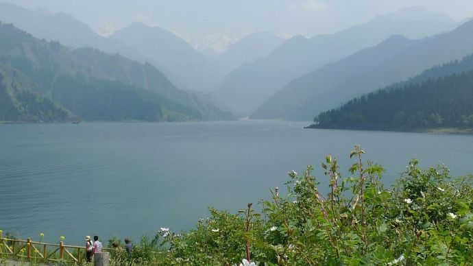
很多去新疆旅游的人觉得天山徒有虚名，我还是觉得很美。远处的雪山、大片的山坡上深的浅的绿、瘦高瘦高形似宝塔的松树、满山的野花，无不体现着和北京、和江南截然不同的异域风光。
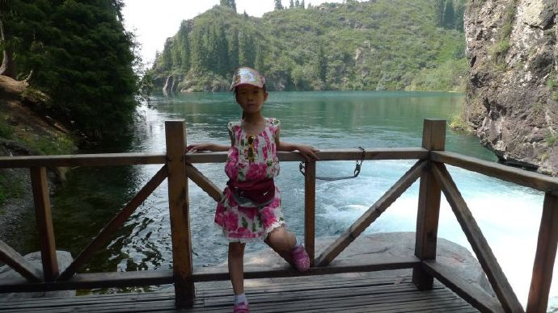
顺着天池边的一条小径，可以到达碧绿碧绿波平如镜的飞龙潭。但是，就在我顺着潭水欣赏这塞外江南的景色时，潭水忽然顺着悬崖峭壁飞流直下，我们才意识到原来我们正站在瀑布的顶端。
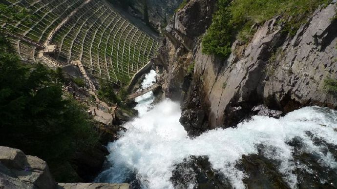
令人震撼的瀑布
7月9日：联系了一个旅行社帮我们安排好一路上住的地方，又联系了一辆14座面包车，开始了我们的北疆之旅。
第一站：可可托海，也就是阿勒泰的富蕴县城。可可托海现在旅行社很少顾及，基本上都是自驾游或者户外俱乐部才会前往。虽然其已经是5A景区了，景区大，而且美，但是去的人还不多，景区也保护完好，没有遭到破坏，算是一个比较幽静的秀美圣地！
新疆地广人稀，从乌鲁木齐到可可托海有一千多公里，开了一天。
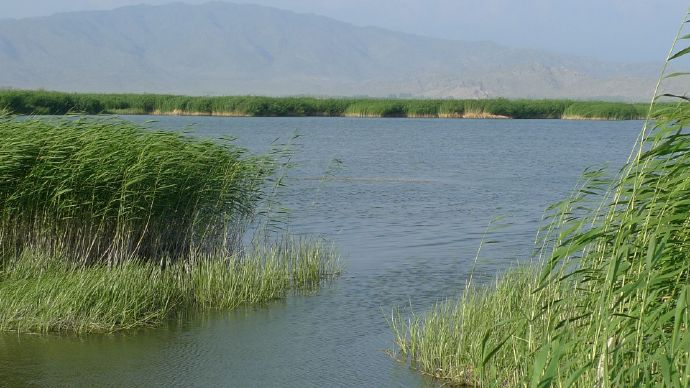
可可苏里湖，有绝佳的风景，是此次新疆之行郭嘉最爱的地方。唯一的遗憾是没有在湖上泛舟，据说芦苇荡中有很多天鹅。
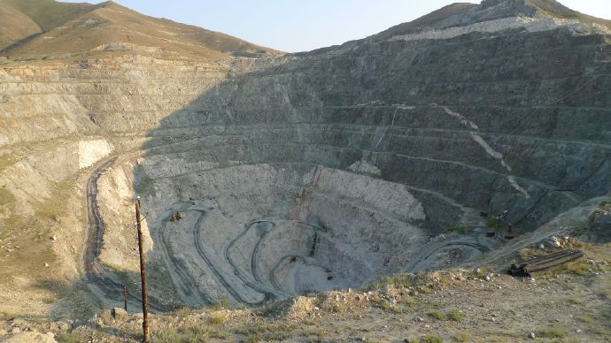
著名的三号矿坑，被喻为中国矿石博物馆，是我国的功勋矿，为两弹做出了重要贡献，现在还在开采中。
7月10日：今天的行程是游览可可托海的主要景点——额尔齐斯大峡谷，然后下午还有4个小时的车程赶赴童话小镇——布尔津县城。布尔津新城每一栋建筑都会设计成童话的样式，像各种各样的城堡。我最爱的还是布尔津的夜市，喝大扎的格瓦斯，吃烤鱼，爽！
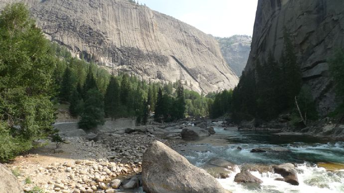
风景独特的额尔齐斯大峡谷，峡谷内的额尔齐斯河是我国唯一一条向西北方向流，最后注入北冰洋的河流。峡谷内的山峰都是一大块一大块的巨石。孩子们就是爱玩水，在水边玩了几个小时，所以峡谷内的景点我们一个都没有走到。
7月11日：从布尔津到贾登峪，进入喀纳斯景区。今天的行程是坐景区车经过著名的三道湾到喀纳斯换乘中心，然后赶往边境城市——白哈巴，再从白哈巴回来，走月亮湾到卧龙湾之间的木栈道。
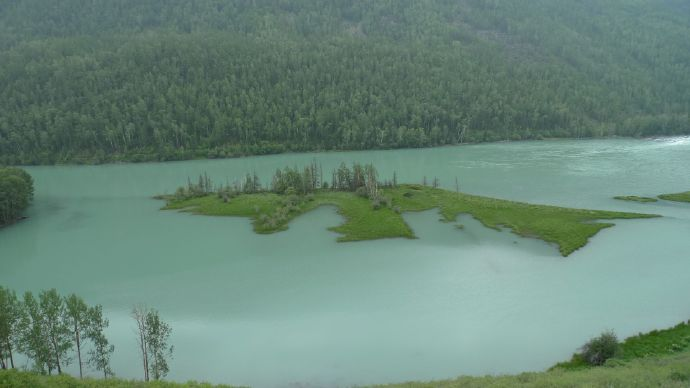
卧龙湾
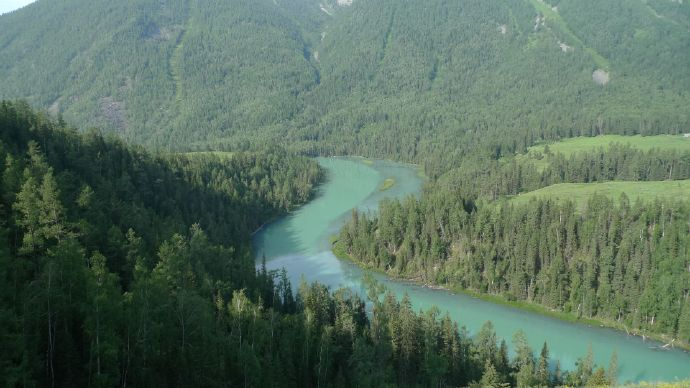
喀纳斯景区的标志性景点——月亮湾
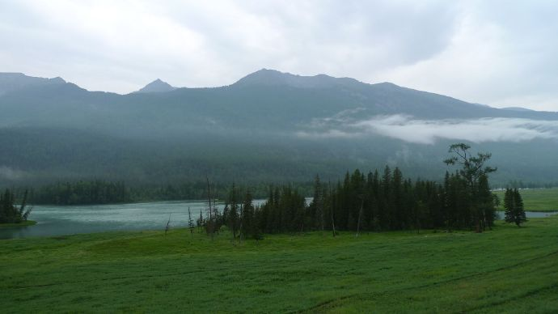
神仙湾，常年飘着有如仙境的云雾
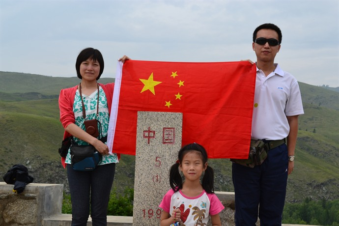
白哈巴边境的5号界碑，身后的白哈巴河是中国和哈萨克斯坦的界河，远处的山头上隐约还能看到哈国的哨所。同行的景区车上有一个有经验的导游还带着国旗，大家都争相与国旗合影。据说金秋的白哈巴有绝美的风景，这个季节似乎没有什么特别的风景了
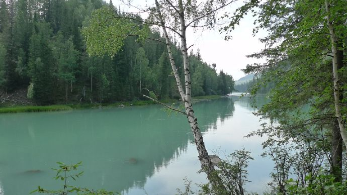
如果是跟旅行团的话，喀纳斯最有名的三湾都只有5分钟的照相时间。我们就很过瘾，顺着修在水边的木栈道来了次零距离接触。
7月12日：这一天的主要行程就是喀纳斯湖，这个因水怪的传说而闻名遐迩的湖泊。坐景区车然后爬一千多级台阶赶往观鱼台，俯瞰喀纳斯湖全景，然后到湖边小憩，再去喀纳斯村的图瓦人家中家访，傍晚赶往禾木。
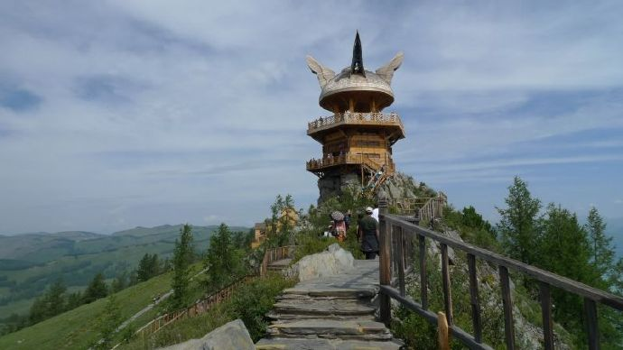
观鱼台，好像是一位有名的设计师设计的，大概是雄鹰展翅的造型，可我总觉得像是动画片里的某个角色，很可乐的感觉。上到观鱼台这一路风景独好，而且是俯瞰喀纳斯湖的最佳地点，还是很值得爬一下的。
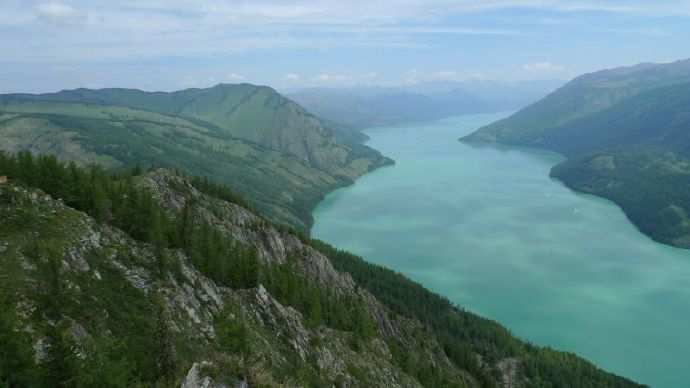
喀纳斯湖的美是拍不出来的，也是用文字无法描述的
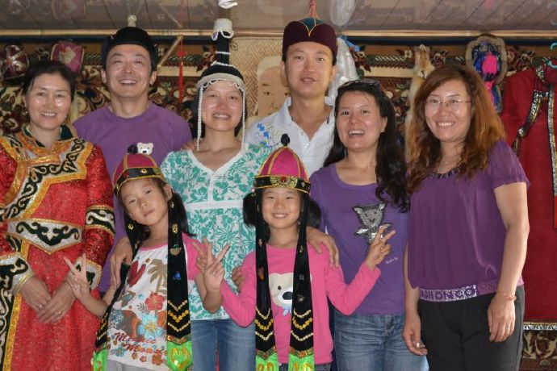
在喀纳斯村的图瓦人家中家访。这家的女主人是一名中学教师，男主人是一名退休的派出所所长，也是名摄影爱好者。我们去的时候，只有女主人在，她给我们介绍图瓦的历史和风俗，给我们看他爱人拍摄的照片，还让我们品尝了自制的马奶酒（说实话，真是难以下咽）。虽然图瓦人家访已经被开发成一个商业项目，不可避免的带有商业气息，但是我们还是觉得这家图瓦人很淳朴，也希望更多人能够接触和了解图瓦文化。
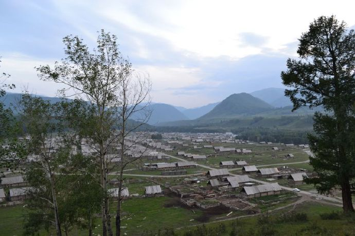
晚上十点半的禾木。禾木其实是图瓦人居住最集中的一个村庄，绝大部分的图瓦人都住在这里。但是现在村里的房子基本上都被租下来变成了客栈。早期的旅行者描述这里有“世界上最美的炊烟”，现在都已经看不到了。
7月13日：这一天的行程就是游览禾木。早上很早就要起床，骑马去点将台看日出，上午在村里村外闲逛，下午又要赶回布尔津。当然，在布尔津的晚餐仍然是夜市的格瓦斯、烤鱼、馕。
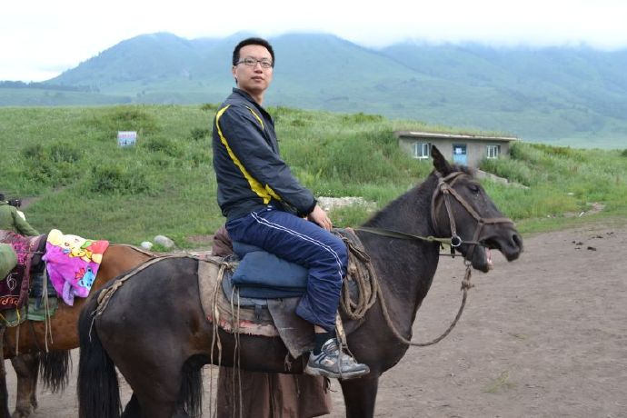
去点将台看日出，来回骑马也有将近一个小时的路程。这一趟骑马，虽然还得有马夫跟着，但是不论对于大人还是孩子，都觉得是一次新鲜的体验
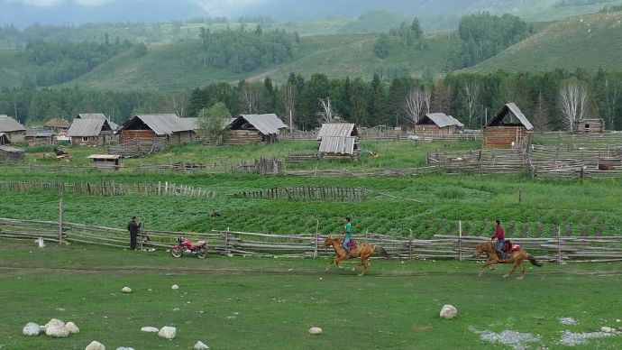
清晨的禾木：天有些阴冷，路上到处是牛粪。村子依山傍水，村边到处是白桦林。不时有游人坐在马背上，被马夫牵引着走过；也有马儿飞奔着过去，骑在马上的就是世居的图瓦人。图瓦人住的都是尖顶的木屋，只有这样冬天房子才不会被厚厚的积雪压塌。对禾木的印象，其实就是一个自然、淳朴、充满乡村乐趣的地方。
在禾木闲逛的一天，也是别有乐趣：早上喝到了刚刚挤出来的还冒着热气的牛奶；上午准备去爬村边的美丽峰，可是过了小河、穿过了白桦树林、爬过了一座小山之后，我们找不到去美丽峰的路了，而且似乎来到了一个人迹罕至的地方：草场的草叶下长着成片的野草莓，偶尔还能看到鲜红的毒蘑菇；水边的树干上一块块褐色的凸起，很像灵芝的样子；堆得像小山一样的小树枝，走近一看竟然是蚂蚁窝，成千上万只蚂蚁在上面蠕动。我们享受着这样的野趣，直到我忽然在面前几步的地方看到了蛇，细细的身子弯成S形，飞快的在草叶中滑动。我们仓惶逃窜，到大路上才松了一口气。想想这里的蛇应该是很多的，其实这一路真的有些危险，想起来仍然心有余悸。
7月14日：从布尔津回乌鲁木齐，选的是和去的时候不一样的道路，当然有不一样的风景了。值得一提的是沙漠、五彩滩、魔鬼城、克拉玛依。回到乌鲁木齐已经傍晚了。
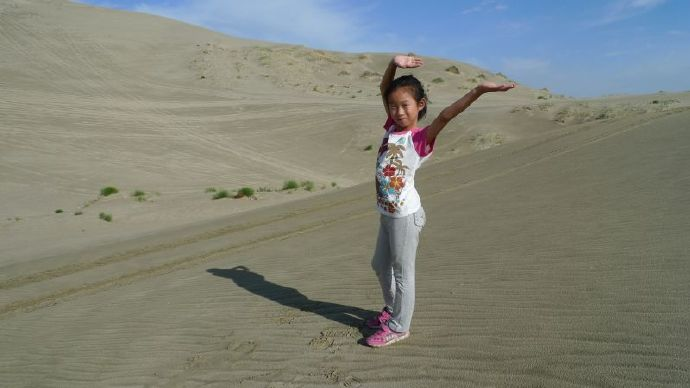
这是回程经过的一片沙漠，好像叫白沙山，有游艺项目。小朋友闹着要坐沙漠飞车，就是在沙上跑的小车，开到沙丘上，再从陡坡上猛冲下来。我坐的难受死了，曼曼居然嫌不够刺激。不过这也是我们第一次看到沙漠呢。
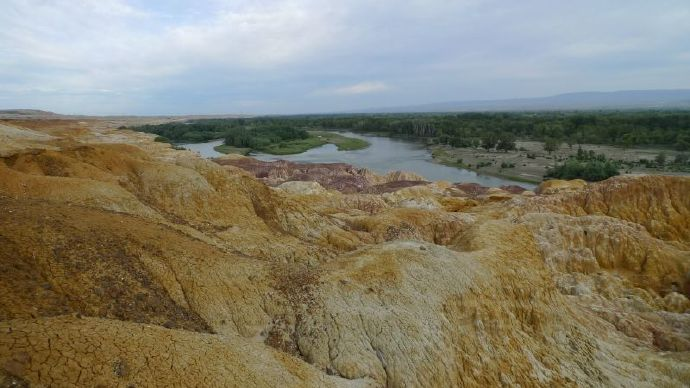
五彩滩震撼的地方是河流两岸截然不同的景色，一边是绿洲，绿树葳蕤，连绵成林；另一边却是干裂的土石，由于岩石含有矿物质的不同，幻化出种种异彩，因此得名“五彩滩”。五彩滩是雅丹地貌的代表。
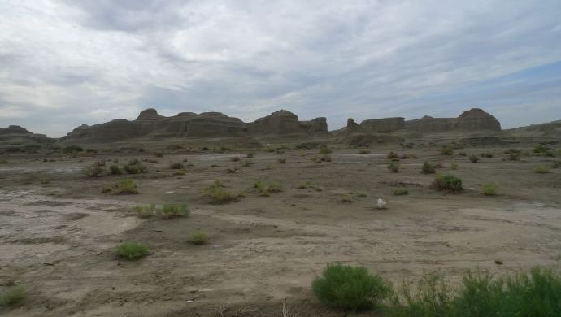
魔鬼城，其实在里面游览的时候并不喜欢这个地方，觉得很没有意思，不就是各种形状的土山嘛，光秃秃的。回家后，郭嘉特意又把“卧虎藏龙”找出来看了一遍，讲玉娇龙和罗小虎的那一段就是在魔鬼城拍摄的。在电影里看到这熟悉的景色，才忽然感觉到这里真的是大漠风光的代表呀。
7月15日：从乌鲁木齐飞回北京。新疆真是个让人留恋的地方，我们一定还会再去的。